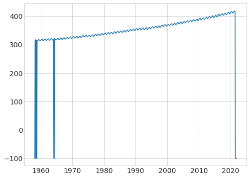
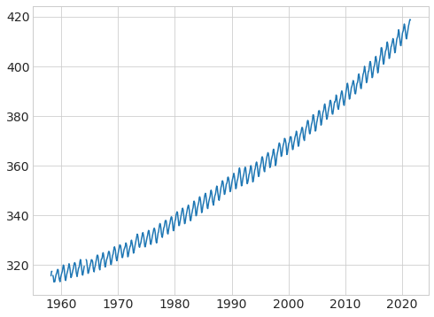
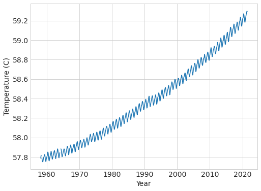
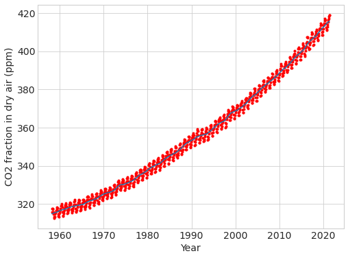
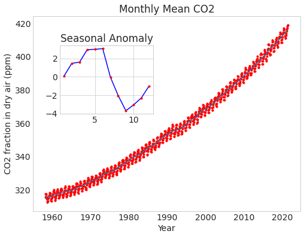
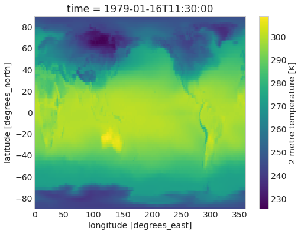
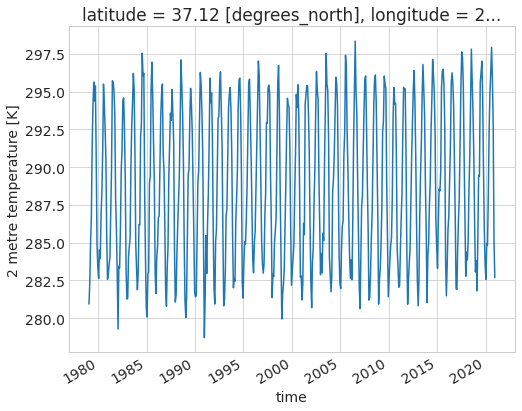

Climate, oceans and data
Contents
Climate, oceans and data¶
Author: Dr. Chelle Gentemann.
This notebook accompanies a lecture for Berkeley’s Data 100 that covers the fundamental physical mechanisms behind global warming and analyzes CO2 and ocean temperature data.
The original resides in this github repository, this is a copy kept as part of the class materials.
Copyright (c) 2021 Chelle Gentemann, MIT Licensed.
import matplotlib.pyplot as plt
import numpy as np
import pandas as pd
# Small style adjustments for more readable plots
plt.style.use("seaborn-whitegrid")
plt.rcParams["figure.figsize"] = (8, 6)
plt.rcParams["font.size"] = 14
Calculate E\(_{in}\) = E\(_{out}\)¶
# Solve for T (slide 15)
Ω = 1372 # W/m2 incoming solar
σ = 5.67e-8 # stephan boltzman constant W/m2/K4
A = 0.3
T = ((Ω * (1 - A)) / (4 * σ)) ** 0.25
print("Temperature =", "%.2f" % T, "K")
Temperature = 255.10 K
calculate greenhouse effect¶
bonus points for greek letters
to get a sigma type ‘\sigma’ then hit tab
# standard values
Ω = 1372 # W/m2 incoming solar
σ = 5.67e-8 # stephan boltzman constant W/m2/K4
T = 288 # temperature K
E = (T ** 4) * σ - (Ω * (1 - A)) / 4
print("greenhouse effect:", "%.2f" % E, "W m-2")
greenhouse effect: 149.98 W m-2
Experiment¶
Solve for the temperature, so that you can see how changes in albedo and greenhouse effect impact T
# Solve for T, including the greenhouse effect
Tnew = (((Ω * (1 - A)) / 4 + E) / σ) ** 0.25
print("temperature =", Tnew, "K")
temperature = 288.0 K
calculate what a change in the greenhouse effect does to temperature¶
what if you increase E by 10%
Enew = E * 1.1
Tnew = (((Ω * (1 - 0.3)) / 4 + Enew) / σ) ** 0.25
print("temperature =", "%.2f" % Tnew)
print(
"10% increase in E leads to ",
"%.2f" % (Tnew - T),
" degree K increase in temperature",
)
print(
"10% increase in E leads to ",
"%.2f" % (100 * ((Tnew - T) / T)),
"% increase in temperature",
)
temperature = 290.73
10% increase in E leads to 2.73 degree K increase in temperature
10% increase in E leads to 0.95 % increase in temperature
# read in data and print some
from pathlib import Path
DATA_DIR = Path.home()/Path('shared/climate-data')
monthly_2deg_path = DATA_DIR / "era5_monthly_2deg_aws_v20210920.nc"
file = DATA_DIR / "monthly_in_situ_co2_mlo_cleaned.csv"
data = pd.read_csv(file)
data.head()
| year | month | date_index | fraction_date | c02 | data_adjusted_season | data_fit | data_adjusted_seasonally_fit | data_filled | data_adjusted_seasonally_filed | |
|---|---|---|---|---|---|---|---|---|---|---|
| 0 | 1958 | 1 | 21200 | 1958.0411 | -99.99 | -99.99 | -99.99 | -99.99 | -99.99 | -99.99 |
| 1 | 1958 | 2 | 21231 | 1958.1260 | -99.99 | -99.99 | -99.99 | -99.99 | -99.99 | -99.99 |
| 2 | 1958 | 3 | 21259 | 1958.2027 | 315.70 | 314.43 | 316.19 | 314.90 | 315.70 | 314.43 |
| 3 | 1958 | 4 | 21290 | 1958.2877 | 317.45 | 315.16 | 317.30 | 314.98 | 317.45 | 315.16 |
| 4 | 1958 | 5 | 21320 | 1958.3699 | 317.51 | 314.71 | 317.86 | 315.06 | 317.51 | 314.71 |
# plot the CO2, note the -99 values you see above showing up in the plot
plt.plot(data["fraction_date"], data["c02"]);

# get rid of missing values that are set to -99.99
file = DATA_DIR / "monthly_in_situ_co2_mlo_cleaned.csv"
data = pd.read_csv(file, na_values=-99.99)
data.head()
| year | month | date_index | fraction_date | c02 | data_adjusted_season | data_fit | data_adjusted_seasonally_fit | data_filled | data_adjusted_seasonally_filed | |
|---|---|---|---|---|---|---|---|---|---|---|
| 0 | 1958 | 1 | 21200 | 1958.0411 | NaN | NaN | NaN | NaN | NaN | NaN |
| 1 | 1958 | 2 | 21231 | 1958.1260 | NaN | NaN | NaN | NaN | NaN | NaN |
| 2 | 1958 | 3 | 21259 | 1958.2027 | 315.70 | 314.43 | 316.19 | 314.90 | 315.70 | 314.43 |
| 3 | 1958 | 4 | 21290 | 1958.2877 | 317.45 | 315.16 | 317.30 | 314.98 | 317.45 | 315.16 |
| 4 | 1958 | 5 | 21320 | 1958.3699 | 317.51 | 314.71 | 317.86 | 315.06 | 317.51 | 314.71 |
# plot the data again
plt.plot(data["fraction_date"], data["c02"]);

# use the CO2 in the equation given in class to calculate the greenhouse effect
# then calculate the increase in temperature in deg C rather than K
E = 133.26 + 0.044 * data["c02"]
# calculate new temperature
data["Tnew"] = (((Ω * (1 - 0.3)) / 4 + E) / σ) ** 0.25
plt.plot(data["fraction_date"], (data["Tnew"] - 273.15) * 9 / 5 + 32)
plt.xlabel("Year"), plt.ylabel("Temperature (C)");

# explore the different data provided in the dataset, what are they?
# can you guess from the names and explain how they were calulated?
# can you re-calculate them? can you re-make the figure in the talk?
plt.plot(data["fraction_date"], data["data_filled"], "r.")
plt.plot(data["fraction_date"], data["data_adjusted_seasonally_fit"])
plt.ylabel("CO2 fraction in dry air (ppm)"), plt.xlabel("Year");

# calculate the annual cycle using groupby
annual = data.groupby(data.month).mean()
annual.head()
| year | date_index | fraction_date | c02 | data_adjusted_season | data_fit | data_adjusted_seasonally_fit | data_filled | data_adjusted_seasonally_filed | Tnew | |
|---|---|---|---|---|---|---|---|---|---|---|
| month | ||||||||||
| 1 | 1989.5 | 32705.25 | 1989.541075 | 356.468571 | 356.421111 | 356.461270 | 356.400952 | 356.468571 | 356.421111 | 287.808514 |
| 2 | 1989.5 | 32736.25 | 1989.625925 | 357.840645 | 357.139355 | 357.248889 | 356.537778 | 357.240317 | 356.539841 | 287.819681 |
| 3 | 1989.5 | 32764.50 | 1989.703250 | 357.965238 | 356.544603 | 357.443906 | 356.010000 | 357.383750 | 355.964375 | 287.820691 |
| 4 | 1989.5 | 32795.50 | 1989.788175 | 359.331270 | 356.773175 | 358.718906 | 356.144844 | 358.745469 | 356.190000 | 287.831802 |
| 5 | 1989.5 | 32825.50 | 1989.870325 | 359.363125 | 356.253281 | 359.383750 | 356.277031 | 359.363125 | 356.253281 | 287.832057 |
# calculate the anomaly
anomaly = annual - annual.mean()
fig, ax = plt.subplots()
ax.plot("fraction_date", "data_filled", "r.", data=data)
ax.plot("fraction_date", "data_adjusted_seasonally_fit", data=data)
ax.set_xlabel("Year")
ax.set_ylabel("CO2 fraction in dry air (ppm)")
ax.set_title("Monthly Mean CO2")
ax.grid(False)
axin1 = ax.inset_axes([0.1, 0.5, 0.35, 0.35])
axin1.plot(anomaly.c02, "b")
axin1.plot(anomaly.c02, "r.")
axin1.set_title("Seasonal Anomaly");

# reading the C02 data from the base file rather than the cleaned up one.
file = DATA_DIR / "monthly_in_situ_co2_mlo.csv"
column_names = [
"year",
"month",
"date_index",
"fraction_date",
"c02",
"data_adjusted_season",
"data_fit",
"data_adjusted_seasonally_fit",
"data_filled",
"data_adjusted_seasonally_filed",
]
data = pd.read_csv(file, header=0, skiprows=56, names=column_names)
data.head()
| year | month | date_index | fraction_date | c02 | data_adjusted_season | data_fit | data_adjusted_seasonally_fit | data_filled | data_adjusted_seasonally_filed | |
|---|---|---|---|---|---|---|---|---|---|---|
| 0 | 1958 | 1 | 21200 | 1958.0411 | -99.99 | -99.99 | -99.99 | -99.99 | -99.99 | -99.99 |
| 1 | 1958 | 2 | 21231 | 1958.1260 | -99.99 | -99.99 | -99.99 | -99.99 | -99.99 | -99.99 |
| 2 | 1958 | 3 | 21259 | 1958.2027 | 315.70 | 314.43 | 316.19 | 314.90 | 315.70 | 314.43 |
| 3 | 1958 | 4 | 21290 | 1958.2877 | 317.45 | 315.16 | 317.30 | 314.98 | 317.45 | 315.16 |
| 4 | 1958 | 5 | 21320 | 1958.3699 | 317.51 | 314.71 | 317.86 | 315.06 | 317.51 | 314.71 |
using xarray to explore era5 data¶
import xarray as xr
ds = xr.open_dataset(DATA_DIR / "era5_monthly_2deg_aws_v20210920.nc")
ds
<xarray.Dataset>
Dimensions: (time: 504, latitude: 90, longitude: 180)
Coordinates:
* time (time) datetime64[ns] ...
* latitude (latitude) float32 ...
* longitude (longitude) float32 ...
Data variables: (12/15)
air_pressure_at_mean_sea_level (time, latitude, longitude) float32 ...
air_temperature_at_2_metres (time, latitude, longitude) float32 ...
air_temperature_at_2_metres_1hour_Maximum (time, latitude, longitude) float32 ...
air_temperature_at_2_metres_1hour_Minimum (time, latitude, longitude) float32 ...
dew_point_temperature_at_2_metres (time, latitude, longitude) float32 ...
eastward_wind_at_100_metres (time, latitude, longitude) float32 ...
... ...
northward_wind_at_100_metres (time, latitude, longitude) float32 ...
northward_wind_at_10_metres (time, latitude, longitude) float32 ...
precipitation_amount_1hour_Accumulation (time, latitude, longitude) float32 ...
sea_surface_temperature (time, latitude, longitude) float32 ...
snow_density (time, latitude, longitude) float32 ...
surface_air_pressure (time, latitude, longitude) float32 ...
Attributes:
institution: ECMWF
source: Reanalysis
title: ERA5 forecastsds.dims
Frozen({'time': 504, 'latitude': 90, 'longitude': 180})
ds.coords
Coordinates:
* time (time) datetime64[ns] 1979-01-16T11:30:00 ... 2020-12-16T11:30:00
* latitude (latitude) float32 -88.88 -86.88 -84.88 ... 85.12 87.12 89.12
* longitude (longitude) float32 0.875 2.875 4.875 6.875 ... 354.9 356.9 358.9
# two ways to print out the data for temperature at 2m
ds["air_temperature_at_2_metres"]
ds.air_temperature_at_2_metres
<xarray.DataArray 'air_temperature_at_2_metres' (time: 504, latitude: 90, longitude: 180)>
[8164800 values with dtype=float32]
Coordinates:
* time (time) datetime64[ns] 1979-01-16T11:30:00 ... 2020-12-16T11:30:00
* latitude (latitude) float32 -88.88 -86.88 -84.88 ... 85.12 87.12 89.12
* longitude (longitude) float32 0.875 2.875 4.875 6.875 ... 354.9 356.9 358.9
Attributes:
long_name: 2 metre temperature
nameCDM: 2_metre_temperature_surface
nameECMWF: 2 metre temperature
product_type: analysis
shortNameECMWF: 2t
standard_name: air_temperature
units: K# different ways to access the data using index, isel, sel
temp = ds.air_temperature_at_2_metres
print(temp[0, 63, 119].data)
print(temp.isel(time=0, latitude=63, longitude=119).data)
print(temp.sel(time="1979-01", latitude=37.125, longitude=238.875).data)
print(temp.latitude[63].data)
print(temp.longitude[119].data)
280.93103
280.93103
[280.93103]
37.125
238.875
.isel versus .sel¶
.isel is endpoint EXclusive
.sel is endpoint INclusive
temp = ds.air_temperature_at_2_metres
point1 = temp.isel(time=0, latitude=63, longitude=119)
point2 = temp.sel(time="1979-01", latitude=37.125, longitude=238.875)
area1 = temp.isel(time=0, latitude=slice(63, 65), longitude=slice(119, 125))
area2 = temp.sel(
time="1979-01",
latitude=slice(temp.latitude[63], temp.latitude[65]),
longitude=slice(temp.longitude[119], temp.longitude[125]),
)
print("area1 uses isel")
# print(area1.dims)
print(area1.latitude.data)
print(area1.longitude.data)
area1 uses isel
[37.125 39.125]
[238.875 240.875 242.875 244.875 246.875 248.875]
print("area2 uses sel")
# print(area2.dims)
print(area2.latitude.data)
print(area2.longitude.data)
area2 uses sel
[37.125 39.125 41.125]
[238.875 240.875 242.875 244.875 246.875 248.875 250.875]
point = ds.sel(time="1979-01", latitude=37.125, longitude=238.875)
area = ds.sel(
time="1979-01",
latitude=slice(temp.latitude[63], temp.latitude[65]),
longitude=slice(temp.longitude[119], temp.longitude[125]),
)
ds.air_temperature_at_2_metres.sel(time="1979-01").plot();

ds.air_temperature_at_2_metres.sel(latitude=37.125, longitude=238.875).plot();

# ds.air_temperature_at_2_metres.mean("time").plot()
mean_map = ds.mean("time") # takes the mean across all variables in ds
mean_map.air_temperature_at_2_metres.plot();
# calculate a map of the mean values across all time
ave = ds.mean(("latitude", "longitude"))
ave.air_temperature_at_2_metres.plot();
# calculate a map of the mean values across all time
ave = ds.mean("time")
ave.air_temperature_at_2_metres.plot();
# calculate a map of the mean values across all time
ave = ds.mean(("latitude", "longitude"))
ave.air_temperature_at_2_metres.plot();
ave = ds.mean(keep_attrs=True)
ave
weights = np.cos(np.deg2rad(ds.latitude))
weights.name = "weights"
weights.plot();
ds_weighted = ds.weighted(weights)
weighted_mean = ds_weighted.mean()
weighted_mean
ds_weighted = ds.weighted(weights)
weighted_mean = ds_weighted.mean(("latitude", "longitude"))
weighted_mean.air_temperature_at_2_metres.plot();
# calculate the annual cycle
annual_cycle = weighted_mean.groupby("time.month").mean()
annual_cycle.air_temperature_at_2_metres.plot();
# calculate the annual cycle at a point
weighted_trend = (
weighted_mean.groupby("time.month") - annual_cycle + annual_cycle.mean()
)
weighted_mean.air_temperature_at_2_metres.plot()
weighted_trend.air_temperature_at_2_metres.plot();
bins = np.arange(284, 291, 0.25)
xr.plot.hist(
weighted_mean.air_temperature_at_2_metres.sel(time=slice("1980", "2000")),
bins=bins,
density=True,
alpha=0.9,
color="b",
)
xr.plot.hist(
weighted_mean.air_temperature_at_2_metres.sel(time=slice("2000", "2020")),
bins=bins,
density=True,
alpha=0.85,
color="r",
)
plt.ylabel("Probability Density (/K)");
pfit = ds.air_temperature_at_2_metres.polyfit("time", 1)
pfit.polyfit_coefficients[0] *= 3.154000000101e16 # go from nanosecond to year
pfit.polyfit_coefficients[0].plot(cbar_kwargs={"label": "trend deg/yr"});
np.timedelta64(1, "Y")
# /np.timedelta64(1,'s').data
pfit.polyfit_coefficients[0, 80, 10] * 3.154000000101e16
import cartopy.crs as ccrs
p = pfit.polyfit_coefficients[0].plot(
subplot_kws=dict(projection=ccrs.Orthographic(0, 90), facecolor="gray"),
transform=ccrs.PlateCarree(central_longitude=0),
cbar_kwargs={"label": "trend deg/yr"},
)
p.axes.coastlines();
Subset all variables to just the Arctic
arctic_ds_weighted = ds.sel(latitude=slice(70,90)).weighted(weights)
arctic_weighted_mean = arctic_ds_weighted.mean(("latitude", "longitude"))
arctic_annual_cycle = arctic_weighted_mean.groupby("time.month").mean()
arctic_weighted_trend = (
arctic_weighted_mean.groupby("time.month") - arctic_annual_cycle + arctic_annual_cycle.mean()
)
arctic_weighted_mean.air_temperature_at_2_metres.plot()
arctic_weighted_trend.air_temperature_at_2_metres.plot();
def linear_trend(x, y):
pf = np.polyfit(x, y, 1)
return pf[0]
x = arctic_weighted_mean.time.dt.year
y = arctic_weighted_mean.air_temperature_at_2_metres
arctic_trend = linear_trend(x, y)
x = weighted_mean.time.dt.year
y = weighted_mean.air_temperature_at_2_metres
trend = linear_trend(x, y)
print('linear trend: global=',trend,'arctic', arctic_trend)
bins = np.arange(245, 280, 1)
xr.plot.hist(
arctic_weighted_mean.air_temperature_at_2_metres.sel(time=slice("1980", "2000")),
bins=bins,
density=True,
alpha=0.9,
color="b",
)
xr.plot.hist(
arctic_weighted_mean.air_temperature_at_2_metres.sel(time=slice("2000", "2020")),
bins=bins,
density=True,
alpha=0.85,
color="r",
)
plt.ylabel("Probability Density (/K)");